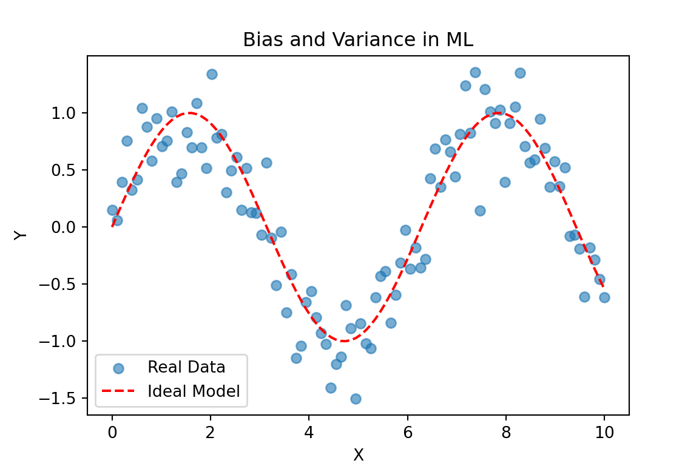

Adquisición y Procesamiento de Señales Biomédicas en Tecnologías de Borde
Ingeniería Biomédica
APSB
Adquisición y Procesamiento de Señales Biomédicas en Tecnologías de Borde - APSB
Machine Learning Introduction
What is Machine Learning?
- Machine Learning (ML) is a data-driven approach to building predictive models.
- It is used in various applications such as healthcare, finance, and automation.
- It is based on identifying patterns in data to make predictions or decisions.
What is Machine Learning?
- ML enables systems to learn from experience without being explicitly programmed.
- Key application areas include image recognition, natural language processing, and autonomous systems.
Types of Machine Learning – Supervised Learning
Supervised Learning: - Uses labeled data to train models. - Example: Spam detection in emails (spam vs. non-spam). - Common algorithms: Linear Regression, Decision Trees, Support Vector Machines (SVM), Neural Networks.
Types of Machine Learning – Unsupervised Learnin
Unsupervised Learning: - Finds patterns in unlabeled data. - Example: Customer segmentation in marketing. - Common algorithms: K-Means Clustering, Hierarchical Clustering, Principal Component Analysis (PCA).
Types of Machine Learning – Reinforcement Learning
Reinforcement Learning: - Optimizes decision-making through rewards. - Example: Training an AI to play a game like Chess or Go. - Key components: Agent, Environment, Reward Signal.
Key Components of an ML Model
- Data:
- The quality and quantity of data are fundamental.
- Data preprocessing (cleaning, normalization, feature extraction) is crucial.
- Model:
- A mathematical representation of the problem.
- Chosen based on the problem type (classification, regression, clustering).
Key Components of an ML Model
- Error function:
- Evaluates the difference between prediction and actual value.
- Example: Mean Squared Error (MSE) for regression, Cross-Entropy Loss for classification.
- Optimization:
- Algorithms that adjust the model parameters to minimize error.
- Common optimization techniques: Gradient Descent, Adam Optimizer.
Bias and Inductivity
- Inductive Bias:
- Prior assumptions that the model uses to generalize.
- Example: Linear models assume data relationships are linear.
- Sample Bias:
- Differences between training data and real-world data.
- Example: A face recognition system trained on a specific demographic may perform poorly on others.
Bias and Inductivity
- Bias-Variance Tradeoff:
- High Bias (Underfitting): The model is too simple, failing to capture patterns.
- High Variance (Overfitting): The model memorizes training data but fails on new data.
Example of Bias and Variance
Basic Machine Learning Algorithms
1. Linear Regression (Supervised Learning - Regression)
- Predicts a continuous value based on input features.
- Equation: ( y = mx + b )
- Example: Predicting house prices based on square footage.
LinearRegression()In a Jupyter environment, please rerun this cell to show the HTML representation or trust the notebook.
On GitHub, the HTML representation is unable to render, please try loading this page with nbviewer.org.
Parameters
Slope: [0.6]Intercept: 2.2Basic Machine Learning Algorithms
2. Decision Trees (Supervised Learning - Classification & Regression)
- Splits data into decision nodes to make predictions.
- Example: Diagnosing a disease based on symptoms.
DecisionTreeClassifier()In a Jupyter environment, please rerun this cell to show the HTML representation or trust the notebook.
On GitHub, the HTML representation is unable to render, please try loading this page with nbviewer.org.
Parameters
Prediction for [1,1]: [1]Basic Machine Learning Algorithms
3. K-Means Clustering (Unsupervised Learning)
- Groups similar data points together.
- Example: Customer segmentation in marketing.
Cluster Centers: [[10. 2.]
[ 1. 2.]]Basic Machine Learning Algorithms
4. Support Vector Machines (SVM) (Supervised Learning - Classification)
- Finds a hyperplane that best separates different classes.
- Example: Classifying tumors as benign or malignant.
SVC()In a Jupyter environment, please rerun this cell to show the HTML representation or trust the notebook.
On GitHub, the HTML representation is unable to render, please try loading this page with nbviewer.org.
Parameters
Prediction for [1,1]: [1]Basic Machine Learning Algorithms
5. Reinforcement Learning Example
- Uses rewards and penalties to train an agent to make optimal decisions.
- Example: A robot learning to navigate a maze.
Trained Q-Table:
[[0.22478108 0.24175608 0.32457474 0.49111254 0.60080129]
[0.29824119 0.35199692 0.47689303 0.63235284 1.19006892]
[0.40506705 0.53038369 0.76968924 1.38219815 2.31651336]
[0.53063187 0.72020798 1.31361063 2.34941179 5.16204119]
[0.58157453 0.89892066 1.76536699 4.17859073 0. ]]